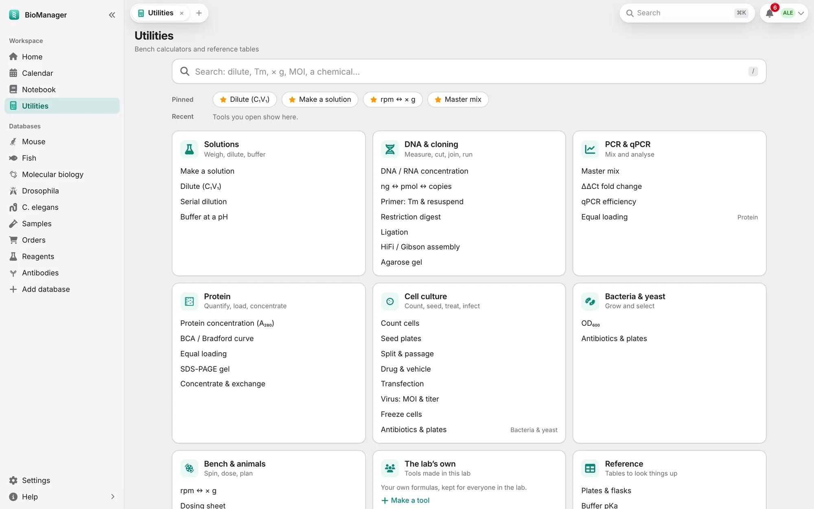

Your databases
Notebook and utilities
Notebook pages, protocols, data sheets, signing, and the bench calculators.
Pages
- Pages in Topics, written like a document and kept as Markdown. A new page goes in the topic you have open, or in Inbox when none is (experiments and meetings go to their own topics). Type / at the start of a line for a menu of blocks: tables, plots, protocols, calculators and the rest below. Templates: ⋯ → Save as template, and start new pages from it (a name you already use asks before replacing that template). It keeps the page's type (an Experiment template makes Experiments); Structure only keeps the headings, steps and table headers and leaves out the results, ticks, readings, pictures and what was written under Results, Observations or Conclusion; Share it with the lab offers it to everyone.
- Type
@to link a mouse, plasmid, order or any inventory record — an antibody, a sample, a primer (@antibodies 5), found by its name, catalogue number or lot (a lot or catalogue number typed in full, like@0012, comes first; names such as anti-β-actin or Waf1/Cip1 are found as written), a database by its name (@antiboffers Antibodies, and picking it lists its records), or a colleague (@jordan, for action items); the page and the record then point at each other, and the record lists the page under Used in notebook pages. The chip shows the record's name after its number (@antibodies 5 · anti-p53). Hover over one for its details; clicking it opens the record, and ↗ (or ⌘/Ctrl-click) opens it in a new BioManager tab. - Daily log (Today) and Meetings: Meetings in the sidebar lists each meeting series, where you
edit its day, place and presenting order. A presenter rotation, shared meeting notes, and action items
(
- [ ] @name …, due …) sent to that person's to-dos — from any page, with ⋯ → Send @name tasks as to-dos. - An AI assistant you connected can add lines to the Log of today's daily log, once you approve them (AI assistants). If the page is open, the line appears in it within a few seconds.
Experiments and protocols
- Experiments: aim, setup, samples and lot numbers, steps, results and a summary. Start and Finished stamp the times; planned, running, done or failed shows in the sidebar. (The colony's Experiments tab groups the animals.)
- Colony experiment (
/experiment) shows an experiment on any of your animals in the page: each day's manipulation, when it was done and by whom, the amount each mouse got, and the body weights as a table and a chart (grams or % of the first weight, with the manipulation days marked). It stays up to date; Freeze a copy keeps what it shows now in the page, so later changes to the experiment don't alter your record. On the experiment itself, Add to notebook makes your page for it with this block already in. - Protocols with numbered versions. Start an experiment from it copies the steps as a checklist and records the version; Run mode takes you through it at the bench, one step at a time.
- Protocols in the sidebar opens the lab's protocols as a page: search them, open one to read or change it, or
make one with New protocol. Sort them into folders: New folder, then drag a protocol onto it, or pick its
folder with the folder button on its card or in the protocol's own bar. Folders are shared with the whole lab; you file
the protocols you can edit. Below are a dozen common protocols built in: open one to read it, and Copy it to make
your own. In a page,
/protocollists the same protocols beside it, folder by folder, to insert one.
Data and calculators
- Data sheets: paste from Excel or a CSV, add formula columns, and get a plot (bar, dot, box, scatter, line) with error bars, a fitted line and a t-test, Mann–Whitney or ANOVA. Paste a log with its headers (time down the first column, readings such as temperature and pressure beside it) and it is drawn as a line over time; Y picks the reading. Plate reader and qPCR blocks read concentrations off a standard curve and ΔΔCt fold changes.
- Formulation (
/formulation): what goes into a reaction or a batch, by mass. In Component, type a chemical's name, abbreviation or CAS number and pick it from the lab's Chemicals database: its molecular weight, purity, density and lot come with it, and the chemical's Used in notebook pages lists the page. Type the Mass you weigh and Amount gives the moles. Mark one row as the basis (the round button beside Equiv.) and give the others in equivalents: the mass to weigh follows, and changes when the basis does. Each row shows its wt %, a liquid its volume, and the total is underneath. - Buffer recipes scale with the volume; common buffers are built in and the lab's own are shared. Recipes in the sidebar opens them: open one to change it, make one with New recipe, sort them into folders as protocols are, or Save a copy of a built-in one. Load from library in a recipe block lists them by folder. Calculators for dilution, molarity, master mix, serial dilution, ligation, cells, gels, DNA/RNA and Protein (A₂₈₀): paste the sequence (or give ε and MW) and the reading, and it gives µM and mg/mL. Durations in a step get a ⏱ timer, named from the step's own words; time points (6, 24, 48 h, at 24 h, the 48 h samples) don't. Times on a page (started 16:00) are on the lab's clock, whatever your computer's time zone.
Signing a page
When a page should be the record of your work, Sign it — your choice, page by page; nothing asks you to. You confirm who you are (your password, or your user name if you sign in with Google or Microsoft) and what signing means. Its exact text is fingerprinted and kept as a version, any live experiment in it is frozen as it is then, and the page is locked: nobody can change or delete it. A lab mate can Witness it. To change it, its owner Amends it with a reason; the reason and every signature stay with the page, each showing whether the page still reads as it did when signed.
Working together
Share a page to read or edit, with people, everyone in the lab or a project group; editors type in it
at the same time. Comments on a passage, with @name telling that
person (switch these notices off under Settings → Notifications). Version history keeps every editing session to
compare or restore. Tags and search work across every page you can open.
Utilities
Utilities, under Notebook in the sidebar, holds 41 bench calculators. Find one in the list or type in Find a calculator (plain letters do: a260, ddct, or what you are doing, like nanodrop); the answer changes as you type, each remembers what you last typed in it on this computer, and Reset goes back to its example. Most solve for whichever field you leave empty (it is marked), and units are yours to choose.
- Solutions & buffers
- Molarity; dilution (C₁V₁ = C₂V₂); serial dilutions; percent solutions; ×-fold stocks; mass ↔ molar concentration; buffer pH (Henderson–Hasselbalch, with the temperature); osmolarity; another form of a chemical (a hydrate or salt for the one in the recipe). Type a chemical's name or formula to fill its molecular weight (MgCl2·6H2O and magnesium chloride hexahydrate are the same one). The lab's own come first: its Chemicals database, by name or abbreviation. One it doesn't know leaves the weight for you to type.
- DNA & RNA
- Concentration from A₂₆₀; mass ↔ moles ↔ copies; oligo Tm, GC, MW and resuspension volume; ligation insert:vector; HiFi/Gibson assembly; PCR and qPCR master mixes; qPCR efficiency from a standard curve; ΔΔCt fold change; transformation efficiency.
- Protein
- Concentration from A₂₈₀; MW, ε and pI from the sequence; a standard curve (BCA, Bradford, ELISA) read off for your samples; SDS-PAGE gel recipes; µg per lane.
- Cells
- Haemocytometer counts; seeding plates (by vessel); doubling time; scaling a transfection; virus for an MOI; lentivirus titer from % positive cells; freezing down; drug and vehicle for treatments.
- Bacteria & yeast
- OD₆₀₀ to cells and dilutions; time to reach an OD; antibiotic for plates and media.
- Centrifuge, animals & gels
- rpm ↔ × g; dose by body weight; agarose gels; radioactive decay.
- Numbers & units
- Mean, SD, SEM and CV; animals or samples per group; a unit converter.
Reference tables, below the calculator: culture vessels, buffers, antibiotics, agarose gels, isotopes and molecular
weights. A link to a calculator (…/utilities#dilution) opens it.
